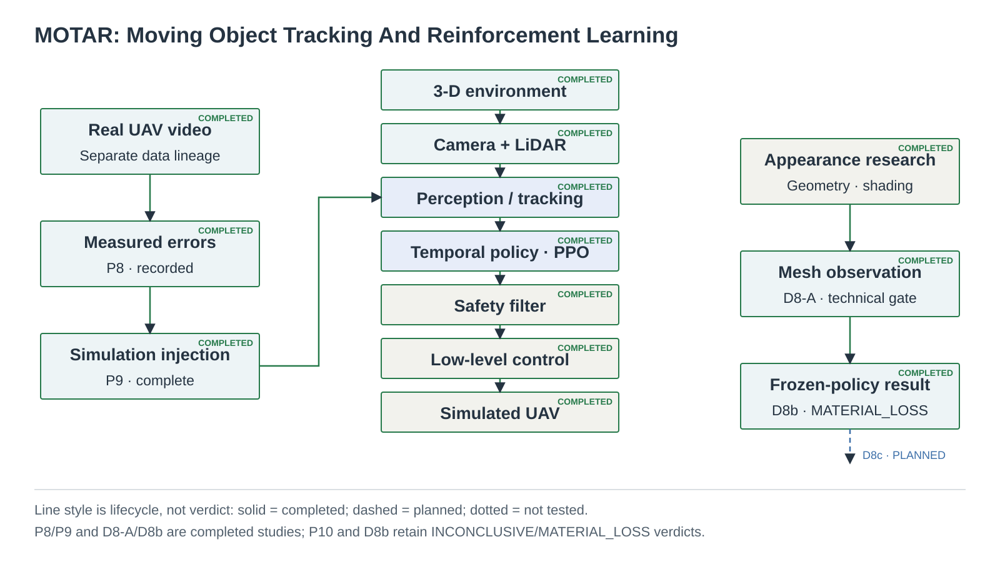
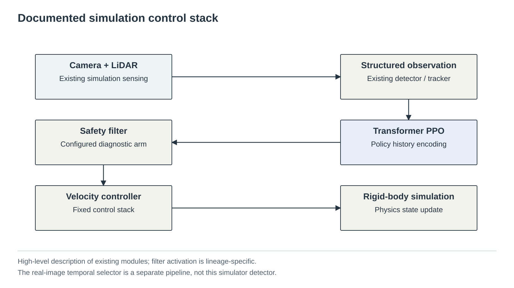
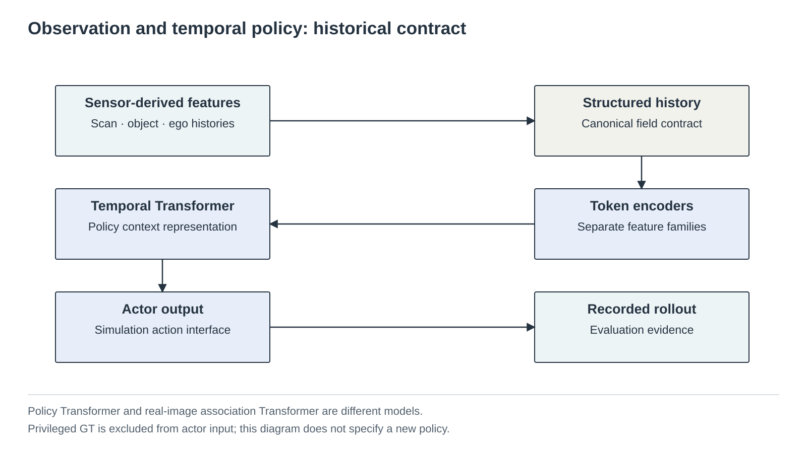
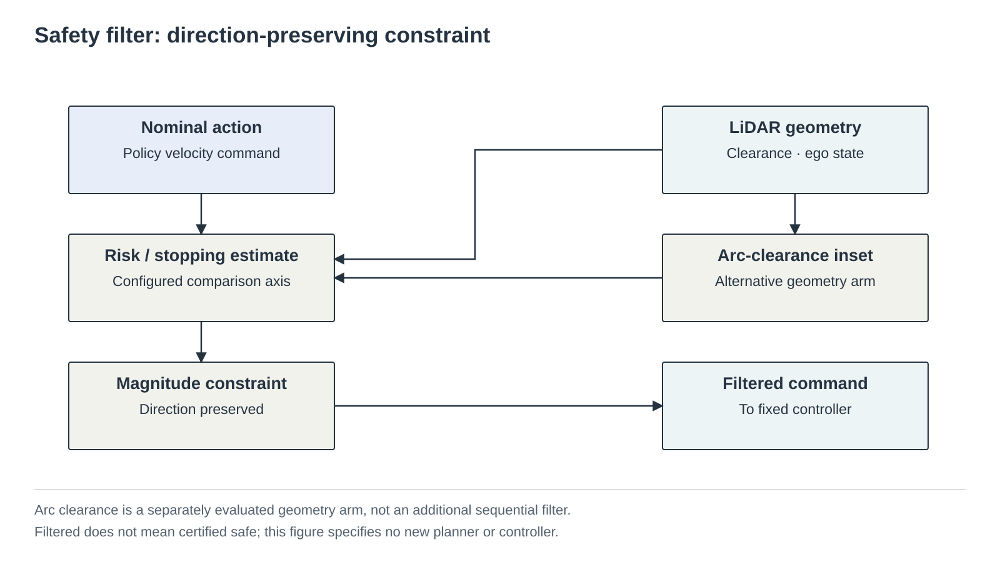
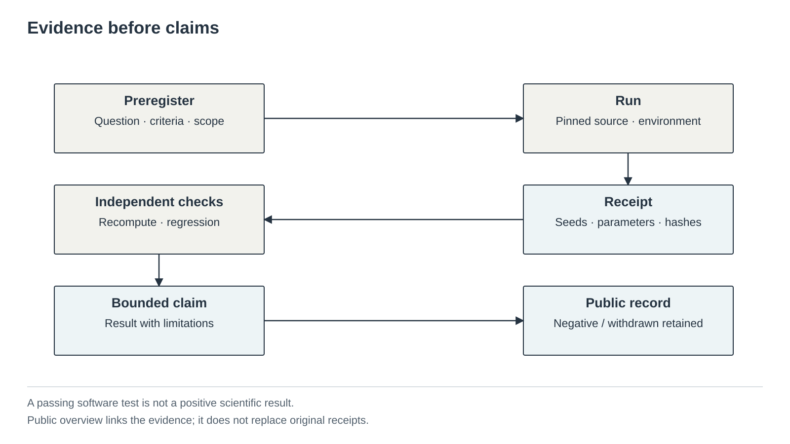

측정된 인지 불확실성
실사 영상의 검출·association 오차를 기록하고, 시뮬레이션 오차 주입 계보와 구분해 연결합니다.
인지 흐름 →밀집 장애물과 움직이는 물체가 있는 환경에서, 인지 오차와 안전필터의 한계를 연구합니다. 실험 결과뿐 아니라 실패·철회·재현 조건까지 함께 공개합니다.
실제 비행 성능 주장은 없습니다. 과거 interception/capture 실험은 원래 이름과 의미로 보존합니다. 공개 표현인 rendezvous가 그 결과를 다른 기능의 증거로 바꾸지는 않습니다.
01 · RESEARCH QUESTION
카메라·LiDAR 관측에서 시작해, 인지와 시간 이력이 장애물 환경의 행동에 어떤 한계를 만드는지 묻습니다. 아래는 연구 질문의 흐름이며, 실사 인지 모델부터 비행까지 통합 검증됐다는 뜻은 아닙니다.

02 · CONTRIBUTIONS
실사 영상의 검출·association 오차를 기록하고, 시뮬레이션 오차 주입 계보와 구분해 연결합니다.
인지 흐름 →기존 필터의 기하와 속도 제한 비교를 분석합니다. 진단 결과를 충돌 방지 보증으로 확대하지 않습니다.
비교 구조 →자산 외형, 센서 프록시, 독립 음영 실험, shadow 비용을 분리합니다. 인지 개선은 아직 입증하지 않았습니다.
렌더링 흐름 →사전등록 → 실행 → receipt → 검증 → 제한된 주장. negative·withdrawn 결과도 삭제하지 않습니다.
증거 흐름 →C1–C4는 이 페이지의 기여 카드 번호이며, 역사적 실험 ID가 아닙니다.
03 · 3D ARENA
설명용 브라우저 장면입니다. 학습 정책이나 PhysX의 실행·재생이 아닙니다.
새 physical fresh lineage의 40×40×3 m arena와
footprint_clearance 배치를 재현합니다. 실제 collision footprint의 외접원을
사용해 막대 중첩을 금지하고 표면 여유 0.45 m를 유지하며 merge fallback도 쓰지 않습니다.
과거 정량 결과의 navrl_band는 중첩을 허용한 historical 환경입니다.
표적은 10 Hz 고정 simulation clock에서 움직이고 화면만 보간합니다.
기본 routed-preview는 동결된 historical global_astar_v1
exact-AABB route를 bounded/lagged browser motion으로 설명합니다. recovery-v2 state machine을
재현하거나 성공으로 표시하지 않습니다. 코너 전환은 planning-time clearance certificate로 검사하고 실패 재계획은 직전 목표
1.0 m 이내를 제외합니다. pursuer와 target motion은 설명용이며, 이 화면은 PPO 실행 영상·PhysX 재생·성능 측정값이 아닙니다.
Loading 3D arena…
Routed preview: 0.25 m deterministic global route, exact bar AABB, 0.45 m tracking reserve, target 3-D box half-diagonal support(0.2069 m), boundary 1.25 m + support, certified corner handoff, 실패 후 직전 goal 1.0 m exclusion을 적용합니다. 대안 경로가 없으면 zero command입니다. Global route + bounded/lagged browser preview · NOT PhysX/PPO.
04 · SYSTEM
기존 시뮬레이터 제어 스택의 설명입니다. 색 기반 baseline과 실사 detector/selector는 서로 다른 인지 계보이며, 실사 파이프라인을 이 그림의 입력 자리에 이미 연결한 것으로 읽으면 안 됩니다.


05 · PERCEPTION & TRACKING
실사 스트리밍 도구는 검출과 광류를 병렬 계산한 뒤 시간 이력으로 후보를 선택합니다. 출력은 해당 프레임의 candidate rank 또는 no-selection입니다. 이를 지속적인 물체 ID나 검증된 bearing·range·velocity 상태로 바꾸어 표현하지 않습니다.
06 · PARAMETERS
소스 확인 기준: 52b5dd8. 아래는 실행 중인 시스템의 측정값이 아니라 설정·계보 요약입니다.
환경변수 override가 있는 실행의 최종 값은 해당 receipt를 따릅니다.
40 × 40 × 3 m · 70 / 115 / 160 / 205 bars는 명시된 연구 계보. 300 bars는 별도 stress 조건입니다.
환경·계보 계약Camera 기본값 160 × 90, HFOV 87°. LiDAR 기본값 36 × 4 / 4 m; canonical 실험은 72 × 4 / 12 m. 360° scan과 전방 240° proposal 선택은 다릅니다.
설정 출처ref5in 후보 1.20 kg · 모터 지연 0.04 s · 물리 dt 0.01 s. 속도 축별 기본값 2.0 m/s와 historical 설정 2.5 m/s를 구분합니다. 기존 제한 기울기는 45°입니다.
기체 계약PPO · canonical 898-D / 17-token policy Transformer. 병렬 환경 기본값 256; D7 주요 셀은 128입니다. 정책 이력 5시점과 실사 selector T=16은 별개입니다.
관측 계약Legacy virtual / bounded / physical / routed 계보를 혼합하지 않습니다. 브라우저의 0.3–1.5 m/s 표시는 설명용이며, 실험 속도는 각 receipt에서 확인합니다.
계보 상세07 · ALGORITHMS
Detector · optical flow · temporal association: 프레임 후보의 선택 기록.
Transformer PPO: 기존 시뮬레이션의 시간 관측 정책.
LiDAR clearance · cap-law · arc geometry: 별개 비교 축의 역사적 분석.
Warp ray query · analytic proxy · mesh / shading: 실행 경로별로 분리된 증거.

08 · EVIDENCE / CURRENT STATUS
단계 상태는 공유 manifest에서 읽습니다. D6의 독립 질의 비용과 D7의 전체 step 비용은 서로 다른 질문입니다.
파이프라인과 측정 기록은 있습니다. 일반화 문제는 남아 있고, P10 재적응의 순효과는 확립되지 않았습니다.
Replication evidenceE3-S의 6.2%는 한 비행에서 leave-one-block-out으로 계산한 블록별 절대 상대오차 중앙값들의 중앙값입니다. 입력은 GT box가 아닌 dark-pixel 크기 proxy이며 일반 거리 센서 정확도가 아닙니다. E3-P 자세 분리·절대 기하는 제한됩니다.
E3-S · E3-PD7의 판정은 비용·출력 비간섭에만 적용됩니다. 인지 개선, association 개선, shortcut 감소의 근거가 아닙니다. R4/R4b 실패를 기준 자체의 결함으로 해석하지 않습니다.
D7 evidence철회된 C3 실험 주장은 되살리지 않습니다. 통계적 불확실성, 자세 신뢰성 실패, 미완료 실행은 성공과 구분해 보존합니다.
All evidence
09 · EXTERNAL DATA
목적: 실사 detector / temporal 평가.
시점: 공대공 영상.
GT: 영상 주석, metric range 없음.
라이선스: 공식 데이터 BSD-3 표기.
목적: 외부 도메인 검출 평가.
시점: 공대공 영상.
GT: bounding box, metric range 없음.
라이선스: 저장소 MIT; 별도 이미지 재배포 조건 미확정.
목적: size–range / 자세 신뢰성 검토.
시점: 지상 카메라.
GT: 공개 position / pose; 정합성 제한.
라이선스: CC BY-NC-SA 4.0, 별도 귀속.
DETAILS & NEXT BOUNDARY
이번 개편은 새 연구 결과나 D8 실행을 만들지 않았습니다. D8 전에는 기하 계약과 관측 계약의 변경 범위, 별도 계보 및 사전등록 상태가 명확해야 합니다. D7의 판정만으로 통합 채택을 뜻하지 않습니다.

{kind=link}
{kind=link}
{kind=link}
{kind=link}
{kind=link}